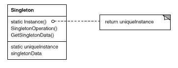

class Singleton {
public:
static Singleton* Instance();
protected:
Singleton();
private:
static Singleton* _instance;
};
実装は次のようになる。
Singleton* Singleton::_instance = 0;
Singleton* Singleton::Instance () {
if (_instance == 0) {
_instance = new Singleton;
}
return _instance;
}
クライアントはメンバ関数 Instance を通じて、唯一のインスタンスに排他的にアクセスする。変数- instance は 0 に初期化される。Instance は- instance の値が0であれば、唯一のインスタンスで初期化してからそのインスタンスを返す。つまり、Instance は遅延初期化を使っており、最初に- instance へのアクセスが行われるまでは、インスタンスは生成、格納されることはない。
コンストラクタは保護的に宣言されていることに注意されたい。すなわち、クライアントが直接 Singleton クラスをインスタンス化しようとする場合には、コンパイル時にエラーが発生する。これにより、インスタンスが1つしか生成されないことが保証される。
さらに、- instance は Singleton オブジェクトへのポインタであるので、メンバ関数 Instance は、Singleton のサブクラスのインスタンスへのポインタをこの変数に代入することができる。この点は「サンプルコード」の節で例をあげる。
C++で実装する場合には注意しなければならないことがさらにある。つまり、Singleton クラスのインスタンスをグローバルすなわち静的なオブジェクトとして定義し、自動的な初期化に頼る方法は十分ではないということである。これは次の3つの理由による。
グローバルすなわち静的なオブジェクトによるアプローチを用いる場合、すべての Singleton オブジェクトを、それが使われるかどうかにかかわらず生成しておかなければならない、という負担が（ごくわずかであるが）増えることになる。静的メンバ関数を用いることで、このような問題をすべて解決することができる。
Smalltalk では、唯一のインスタンスを返す関数は Singleton クラスのクラスメソッドとして実装される。インスタンスが1つしか生成されないことを保証するために、new メソッドをオーバーライドする。結局、Singleton クラスは、次のような2つのクラスメソッドを持つことになる。ここで、SoleInstance は、他では使われることのないクラス変数である。
new
self error: 'cannot create new object'
default
SoleInstance isNil ifTrue: [SoleInstance := super new].
^ SoleInstance
Singleton のサブクラスを選択するための別の方法として、Instance オペレーションの実装を親クラス（たとえば、MazeFactory クラス）の外に出して、サブクラスに入れることがあげられる。これにより、使用するサブクラスをプログラマがリンク時に決定できるようになる（たとえば、異なる実装を含むオブジェクトファイルをリンクすることによる）。しかし、クライアントからは隠ぺいしておくことができる。
この方法では、サブクラスの選択をリンク時に行うので、実行時に選択するのは困難である。サブクラスを決定するために、条件文を用いればより柔軟にすることができるが、使われる可能性のあるサブクラスを直接コード中に記述することになる。どちらの方法も、すべての場合に適用できるほど柔軟なものではない。
さらに柔軟な方法として、Singleton オブジェクトの登録機構を用いることがあげられる。選択できるサブクラスの集合を Instance オペレーションで定義する代わりに、各サブクラスがそのインスタンスと名前を、一般に公開されている登録機構に登録する。
登録機構では、名前とインスタンスの間の対応関係が維持される。Instance オペレーションがインスタンスを必要とするときには、その名前でインスタンスを探してもらうように登録機構に依頼する。登録機構は対応するインスタンスを検索して、存在すればそれを返す。この方法では、Instance オペレーションが選択可能なサブクラスやインスタンスを把握しておく必要がなくなる。その代わりに、Singleton の全クラスに対して、登録機構に対するオペレーションを備えた共通のインタフェースが必要になる。
class Singleton {
public:
static void Register(const char* name, Singleton*);
static Singleton* Instance();
protected:
static Singleton* Lookup(const char* name);
private:
static Singleton* _instance;
static List<NameSingletonPair>* _registry;
};
Register オペレーションは、与えられた名前でインスタンスを登録する。単純化のために、登録機構には NameSingletonPair オブジェクトのリストを持たせることにする。各 NameSingletonPair オブジェクトは、名前とインスタンスの対応を保持している。Lookup オペレーションは、名前を基にインスタンスを探す。ここでは、必要なインスタンスの名前が環境変数に明記されていることにしている。
Singleton* Singleton::Instance () {
if (_instance == 0) {
const char* singletonName = getenv("SINGLETON");
// user or environment supplies this at startup
_instance = Lookup(singletonName);
// Lookup returns 0 if there's no such singleton
}
return _instance;
}
サブクラスは自身のインスタンスをどこで登録するのだろうか。1つの可能性としては、コンストラクタ内があげられる。たとえば、サブクラスMySingletonでは次のようにすることができる。
MySingleton::MySingleton() {
// ...
Singleton::Register("MySingleton", this);
}
もちろん、コンストラクタはそのクラスがインスタンス化されなければ起動されないので、Singleton パターンで解決しようとしていた問題が再び生じることになる。C++では、MySingleton クラスの静的インスタンスを定義することにより、この問題を回避することができる。たとえば、
static MySingleton theSingleton;
のように、MySingleton クラスの実装を記述するファイルの中で定義しておくことができる。
このようにすることで、Singleton クラスは唯一のインスタンスの生成に対してもはや責任を持つ必要はなくなり、その代わりに、選択されたインスタンスをシステム内でアクセスできるようにする責任を持つことになる。静的オブジェクトを使う方法にはそれでも潜在的な欠点が含まれている。つまり、選択される可能性のあるサブクラスのインスタンスをすべて生成しておかなければ、それらは登録されないということである。

class MazeFactory {
public:
static MazeFactory* Instance();
// existing interface goes here
protected:
MazeFactory();
private:
static MazeFactory* _instance;
};
MazeFactory* MazeFactory::_instance = 0;
MazeFactory* MazeFactory::Instance () {
if (_instance == 0) {
_instance = new MazeFactory;
}
return _instance;
}
MazeFactory* MazeFactory::Instance () {
if (_instance == 0) {
const char* mazeStyle = getenv("MAZESTYLE");
if (strcmp(mazeStyle, "bombed") == 0) {
_instance = new BombedMazeFactory;
} else if (strcmp(mazeStyle, "enchanted") == 0) {
_instance = new EnchantedMazeFactory;
// ... other possible subclasses
} else { // default
_instance = new MazeFactory;
}
}
return _instance;
}